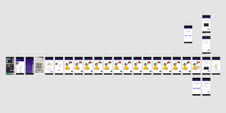
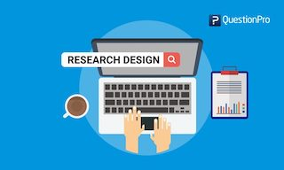

     <section class="work-experience">
        <div class="content-wrap item-details divider">
            <a class="btn" href="portfolio.html" >Home</a>
            
            
            <link rel="stylesheet" href="styling.css">


            <section class="projects">
        <div class="content-wrap divider">
          <h2>Projects</h2>
          <p>Here, i will mention projects that i have done before, or curently on going</p>
            
            
            
            

          <!-- Project 1 -->
          <section class="project-item">
            
            <h3>Prototype</h3>
            <p>Prototype is something that is necessary when you want to build a perfect design. In here, i want to tell you one of my project that allows me to use my skill</p>
              
            <p> In this project, we worked together with Hallmark <link href="hallmark.nl"> to establish a way to deliver emotional message through digital unwrapping. This prototype is something that i build based on my user. In this prototype, i was trying to input every elements to recalling all the memories that the user have. 
              </p>
            <a class="btn" href="https://xd.adobe.com/view/a1278011-ca91-430a-5c72-0b08470cb78c-d716/" target="_blank">Unwrapping prototype</a>
          </section>

          <!-- Project 2 -->
          <section class="project-item">
            
            <h3>Research in building the prototype</h3>
            <p>Related to the first project, i finished this one first in order to continue to the "Prototype" part. In this part, i dig deeper to the user, performing multiple methods to interview and observe.</p>
              
              <p>Working together with Hallmark, they want the user to experience such an amazing time as if they are revealing tengible gift. The aim of this research is to give the emotional message through digital unwrapping. Digital unwrapping itself is something that you encounter during the process of opening an intengible gift. To get to this state, i started by interviewing the user, asking things related to intengible gift, and gift giving receiving experience. Because i worked on a team, my and my partner combined our user to be one persona, called Nemo. Then, i started to make ideas based on Nemo. Building storyboard, a scenario where i could find a way to spice up my design. Next, i started to make a prototype, based on the user's need and interest. You could see more detailed information regarding the prototype in the first project. </p>
          </section>

          <!-- Project 3 -->
          <section class="project-item">
            
            <h3>User Trialling</h3>
            <p>This third project, is also something that i did with workmates, but at the same time it has also a personal section that allows me to perform my research skills. We worked together with Rijksmuseum in DenHaag. The aim of this project is to able to test the usability of the museum's website.</p>
              
              <p> We build a demographic profile for the user that will be testing the website. Next, we perform a "pilot" procedure, which is a way to breifly test our website. We asked the user to perfome multiple task as a measurement regarding to the usability of the website. After that, we develope our task and perform the user trialling. This steps allow us to really found something that is not match to the use of the website. This project really showed the depth of a user trialling and the way it affected the working process of a product, in this case, website. 
              
              </p>
          </section>
        </div>
      </section>